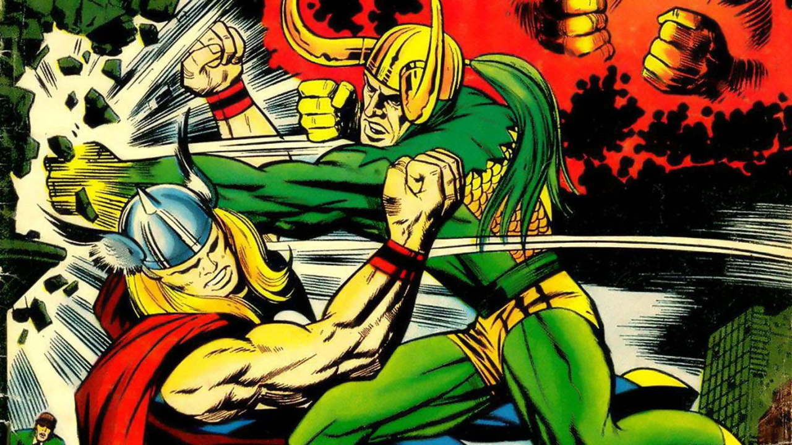
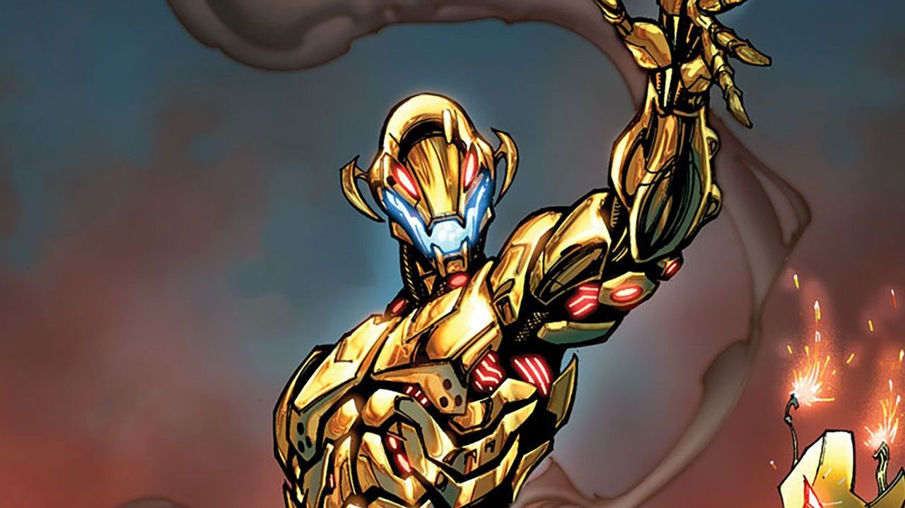
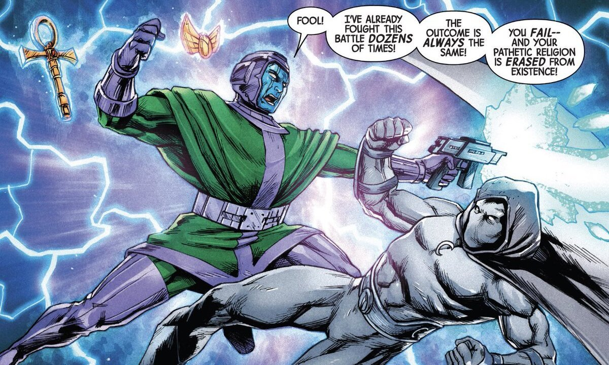

Лучшие злодеи киновселенной Марвел
Ссылочка на pull-request
Локи
- сын ётуна Фарбаути и Лаувейи, сводный брат Тора.

Альтрон
- искусственный интеллект, созданный Тони Старком и Брюсом Беннером.

Танос
- девиант, рождённым на планете Титан.
Канг Завоеватель
- путешественник во времени c интеллектом человека из 31 века.

Галактус
- знаменитый Пожиратель миров с космической силой.